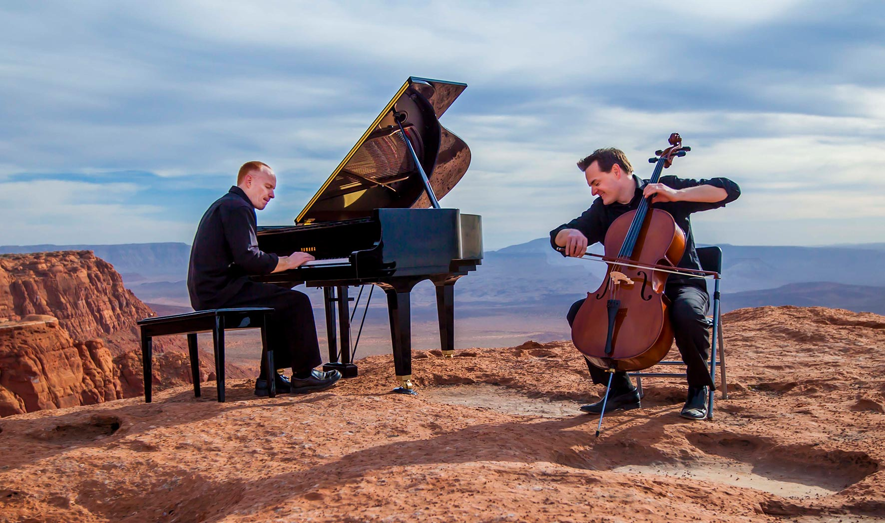

The music I listen the most to is instrumental, especially piano. Whether I want a joyful tune or a sorrowful one, I can always find one that will suit me played by people on the piano. Unlike singing or any other type of music, this is the one that calms me down the most and helps me relax. Usually I listen to soundtracks of The Piano Guys.
